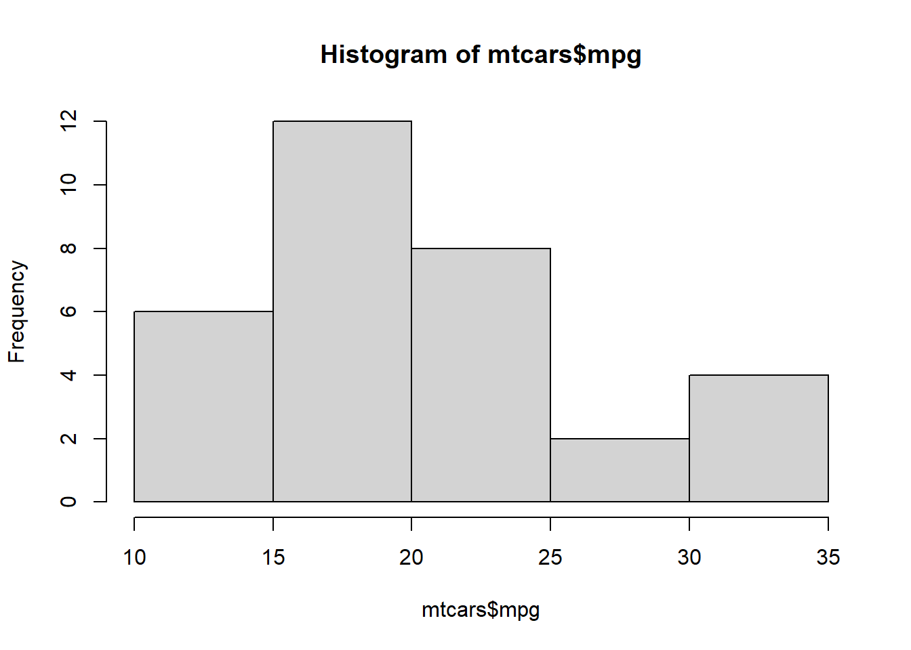

One of the most powerful and versatile aspects of R is the ability it affords us for data visualization. More than creating pretty pictures, visualization is an important part of data analysis and science communication. Visualization can also be used to manipulate or mislead our understanding of a particular phenomenon, and can hide data. This is why it is essential to create visualizations that are clear, easy to follow, and reproducible.
A full tutorial on data visualization can comprise its own book, and in fact, does. There are a number of books and other resources for data visualization in R which can help you choose the right visualization for the right data, along with several design principles. Three of these resources are presented in Table 10.1 below.
Table 10.1: Resources for learning more about data visualization in R.
For our purposes, we’ll go over how to create some basic graphs using base R, and more aesthetically pleasing graphs using the ggplot2 package. We’ll illustrate some graphs using the gapminder dataframe from the gapminder library. So go ahead and install this library if you haven’t already done so.
10.1 Visualizations in Base R
10.1.1 Bar graphs
Bar graphs are commonly used to illustrate differences between groups on some numeric measure. Usually the levels of a categorical variable are on one axis, and some sort of numeric measure on the other axis. The latter can be another variable, but can also be a summary measures such as counts, sums, means, or standard deviations. In base R, we can create a bar graph using the barplot() function. Let’s say I want to compare the total population for the five continents in the gapminder dataframe for the year 1952.
library(gapminder)library(tidyverse)# First, I'll create a small dataframe which filters the dataframe by the year 1952. It then groups the dataframe by continent, and creates a new variable which adds up the total population by continent. It then divides this variable by a million, rounds to the nearest integer, and renames the columns.sumpop <- gapminder %>%filter(year =="1952") %>%group_by(continent) %>%summarise(sum_pop =sum(pop)) %>%mutate(sum_pop =round((sum_pop/1000000), digits =0)) %>%rename("Total Population (Millions)"= sum_pop,"Continent"= continent) head(sumpop)
# A tibble: 5 × 2
Continent `Total Population (Millions)`
<fct> <dbl>
1 Africa 238
2 Americas 345
3 Asia 1395
4 Europe 418
5 Oceania 11
# Now, let's make a basic barplot.barplot(sumpop$`Total Population (Millions)`,names.arg = sumpop$Continent)
Ok, that’s not the prettiest bar graph in the world. Also the y-axis doesn’t extend to the maximum value of the data. Let’s change the y-axis limits with the ylim argument. Let’s also add some color to the bars, add a title, and label the y-axis.
Colors in R
Before we proceed, let’s take a moment to review how to use colors for our visualizations in R. There are a number of ways to use colors in R. The first way is to simple write the name of the color like "red", "beige", "cyan" or more exotic color names such as "darkorchid2", "goldenrod", and "mistyrose". In fact, there are 657 colors which you can currently call by name. The full list can be seen by running the colors() function. Of course, seeing a list of color names is not useful unless we already know how the colors look. To see a full list of all 657 colors along with their names, check out this Data Novia page.
You might want to choose colors based on a palette, often to illustrate progress on a gradient. Or you might just find it easier to look at a palette and see which colors work well together. In such cases, I recommend choosing an established color palette from the RColorBrewer package. You can load this library and use the display.brewer.all() function to get a list of color palettes. The palettes are listed in Figure 10.1 below. You can then use the brewer.pal() function from the RColorBrewer package to add some colors to our visualizations. The first argument is the number of colors you want, and the second argument is the name of the palette.
Figure 10.1: The RColorBrewer package has a number of great color palettes.
Finally, you can also invoke colors by hexadecimal number. The hexadecimal system is a numerical system of base-16. It uses 16 symbols to represent numbers (10 to 15 are represented with the letters A through F). A list of hexadecimal numbers can be found in Figure 10.2.
Figure 10.2: Hexadecimal color codes. Source: VisiBone.
When using the hexadecimal (or ‘hex’) number in the col = argument, make sure to add a hash # in front of the code (e.g. #00CCFF, #0033CC).
Ok, back to our barplot. Let’s create one with named colors, labels, and a title.
barplot(sumpop$`Total Population (Millions)`, #this is the y-axis variable.names.arg = sumpop$Continent, # this is the x-axis variable.col =c("forestgreen", "darkblue", "brown2", "gold1", "magenta4"), # the color of the barsylim =c(0, 1400), # y-axis limitylab ="Population (millions)",main ="Total Population by Continent in 1952"# Title of graph. )
Looks good, but how about some colors from the Wes Anderson movie The Royal Tenenbaums? Why not!
library(wesanderson)# Let's look at the second The Royal Tenenbaums palette.The first one only has four colors, but the second one has five.wes_palette("Royal2")
pal1 <-wes_palette("Royal2")barplot(sumpop$`Total Population (Millions)`, #this is the y-axis variable.names.arg = sumpop$Continent, # this is the x-axis variable.col = pal1, # the color of the barsylim =c(0, 1400), # y-axis limitylab ="Population (millions)",main ="Total Population by Continent in 1952"# Title of graph. )
10.1.2 Histograms
If you have two numeric variables, you can examine the distribution of a variable based on values of another variable with a histogram. Even if you only want to examine the distribution of values in one variable, a histogram is a great approach. I commonly check the distribution of a variable quickly with the hist() function, where the first argument is the variable of interest. Other arguments can be used to add axis labels, titles, and axis limits. With a histogram, the number of bars or bins can be increased when you have many different values. This can be adjusted with the breaks = argument. Let’s look at the distribution of the mpg variable in the mtcars dataframe.
# A quick and basic histogramhist(mtcars$mpg)

# Let's add some color, labels, and axis limits.hist(mtcars$mpg, col ="#FF3333",xlab ="Miles Per Gallon",ylab ="Count",main ="Distribution of Miles Per Gallon",xlim =c(0, 40),ylim =c(0, 15) )
# Let's now increase the number of bins. If we do this with many unique values, we may need to adjust the y-axis limits since the frequency is more diffuse.hist(mtcars$mpg, col ="#FF3333",xlab ="Miles Per Gallon",ylab ="Count",main ="Distribution of Miles Per Gallon",xlim =c(0, 40),ylim =c(0, 5),breaks =20 )
10.1.3 Scatterplot
When we have two numeric variables and want to see the relationship between them, a scatterplot is ideal. This visualization is a series of dots on graph that shows the corresponding value of y for all values of x in the dataframe. This can be constructed using the plot() function.
# Let's create a scatterplot of miles per gallon and horsepower.plot(mtcars$mpg, mtcars$hp,main ="Scatterplot of miles per gallon and horesepower",xlab ="Miles per Gallon",ylab ="Horsepower",col ="#FF00CC",ylim =c(30,350) )
We can also change the shape of the points to other things, listed in Figure 10.3 using the pch = argument. The size of the shape can be adjusted by specifying a number relative to the current size. For example cex = 2 would double the default size of the shape, and cex = 0.5 would reduce the size of the shape by 50%.
Figure 10.3: Different points that can be used on scatterplots.
For instance, let’s change the shape of the dots to the filled-in triangle (#17), and increase the size of the shapes by 50%.
plot(mtcars$mpg, mtcars$hp,main ="Scatterplot of miles per gallon and horesepower",xlab ="Miles per Gallon",ylab ="Horsepower",col ="#FF00CC",ylim =c(30,350), cex =1.5,pch =17 )
You can export the images to certain formats using the corresponding functions - jpeg(), png(), svg(), and pdf(), where the first argument is the file path including the file name, and additional arguments that can be used to adjust the width and height of the image. After this command is run, we then create the plot, and then close the plot using the dev.off() function.
# Step 1: Create export file.png("Scatterplot1.png", width =750, height =500)# Step 2: Create plot.plot(mtcars$mpg, mtcars$hp,main ="Scatterplot of miles per gallon and horesepower",xlab ="Miles per Gallon",ylab ="Horsepower",col ="LightSkyBlue",ylim =c(30,350),pch =19 )# Close file.dev.off()
10.2 Visualizations in ggplot2
One of the best parts of the tidyverse is the ggplot2 package for data visualization. The ‘gg’ in ggplot2 stands for grammar of graphics, the namesake of a famous book by Leland Wilkinson. The books sets out a framework for layering elements to construct visualizations. If you’ve ever used graphic design software like Photoshop or Canva, you will note a similar idea behind layering different elements together. The creator of ggplot2 - Hadley Wickham - was influenced by this approach, and extended this thinking in his paper A Layered Grammar of Graphics.1
One of the main ideas behind the grammar of graphics influence on ggplot2 is that each graphic can contain many layers of different things, but they all need at least three basic layers satisfied:
Some data that you want to visualize. This is commonly one or more variables from a dataframe.
Particular aesthetics (aes for short) which specify the axes and dimensions of the plot.
A geometric object (geom for short) which refer to the type of plot we want (scatterplot, bar plot, etc).
There are other potential layers we can add to customize labels, add relevant statistics, use a different coordinate system, specify subplots, and more. Some of the main layers are presented in Figure 10.4. Note that the bottom three are the most crucial as these form the basic building blocks of a ggplot.
Figure 10.4: Some of the main layers of ggplot2. At a minimum, you need the bottom three layers to create a ggplot.
10.2.1 Bar Graphs
Let’s return to the gapminder dataframe from the package of the same name. In Section 10.1.1 we created bar graphs for population by continent for the year 1952. Let’s do the same thing, but for the year 2007, and using ggplot() function to create our bar graph. Note that with bar graphs, we need the argument stat = "identity" within the geom_bar() layer.
# First, let's create a smaller dataframe which filters the dataframe by the year 2007 It then groups the dataframe by continent, and creates a new variable which adds up the total population by continent. It then divides this variable by a million, and rounds to the nearest integer.sumpop2 <- gapminder %>%filter(year =="2007") %>%group_by(continent) %>%summarise(sum_pop =sum(pop)) %>%mutate(sum_pop =round((sum_pop/1000000), digits =0))head(sumpop2)
# A tibble: 5 × 2
continent sum_pop
<fct> <dbl>
1 Africa 930
2 Americas 899
3 Asia 3812
4 Europe 586
5 Oceania 25
# Let's now create our bar graph to examine population by continent for the year 2007.ggplot(sumpop2, ## Data layeraes(x = continent, y = sum_pop)) +## Aesthetics layergeom_bar(stat ="identity") ## Geometry layer
That’s the basic bar graph. Let’s add some colors using the fill = argument in the aes layer. We can also modify the colors by name or hex digit using the scale_fill_manual() function. We can also use a palette from the RColorBrewer package using the scale_fill_brewer() function. Additionally, we can also modify the legend position (including to omit it entirely) using the theme(legend.position = )argument. If we want to reorder the x-axis categories, we can do that using the scale_x_discrete(limits = function. We can also modify axis labels and the title of the plot using the labs() layer. Additionally, the grey background of the graph can seem pretty drab. To change the overall appearance of the plot, we can select one of a number of themes (see a list of themes on the ggplot page). Personally, I like the theme called minimal.
# Using the "fill =" argument, we enter the variable we want to color.ggplot(sumpop2,aes(x = continent, y = sum_pop, fill = continent)) +geom_bar(stat ="identity")
# We can change the colors by name or hex digit using scale_fill_manual().ggplot(sumpop2,aes(x = continent, y = sum_pop, fill = continent)) +geom_bar(stat ="identity") +scale_fill_manual(values =c("#FF0000", "#FF00CC", "#3300FF", "#33FF00", "#CC9900"))
# Let's use a palette from the RColorBrewer package, reorder the continents on the x-axis in descending order, get rid of the legend, change the axis labels, add a title for the plot, and use the minimal theme.ggplot(sumpop2,aes(x = continent, y = sum_pop, fill = continent)) +geom_bar(stat ="identity") +scale_fill_brewer(palette ="Set1") +theme(legend.position ="none") +scale_x_discrete(limits =c("Asia", "Africa", "Americas","Europe", "Oceania")) +labs(title ="Total Population by Continent in 2007",y ="Total Population (Millions)",x ="Continent") +theme_minimal()
It’s starting to look nicer, right? There’s plenty more we can do to customize this ggplot, including adding value labels right above each bar, which can improve the interpretability of the plot. We can also another variable in there to compare changes. For instance, let’s say we want to look at the population in 1952 vs 2007 for each continent.
# First, let's create a dataframe with population for the years 1952 and 2007 by continent. sumpop3 <- gapminder %>%select(country, continent, year, pop) %>%filter(year =="1952"| year =="2007") %>%group_by(continent, year) %>%summarise(total_pop =sum(pop)) %>%mutate(total_pop =round((total_pop/1000000), digits =0))sumpop3$year <-as.factor(sumpop3$year)head(sumpop3)
# A tibble: 6 × 3
# Groups: continent [3]
continent year total_pop
<fct> <fct> <dbl>
1 Africa 1952 238
2 Africa 2007 930
3 Americas 1952 345
4 Americas 2007 899
5 Asia 1952 1395
6 Asia 2007 3812
# Now let's create side-by-side bar graphs (known as a dodged barplot) using the position = position_dodge() argument in geom_bar(). ggplot(sumpop3,aes(x = continent, y = total_pop, fill = year)) +geom_bar(stat ="identity", position =position_dodge()) +scale_fill_brewer(palette ="Set1") +theme(legend.position ="none") +scale_x_discrete(limits =c("Asia", "Africa", "Americas","Europe", "Oceania")) +labs(title ="Total Population by Continent: 1952 vs 2007",y ="Total Population (Millions)",x ="Continent") +theme_minimal()
# Now let's add value labels above each bar using the geom_text() layer.ggplot(sumpop3,aes(x = continent, y = total_pop, fill = year)) +geom_bar(stat ="identity", position =position_dodge()) +scale_fill_brewer(palette ="Set1") +theme(legend.position ="none") +scale_x_discrete(limits =c("Asia", "Africa", "Americas","Europe", "Oceania")) +labs(title ="Total Population by Continent: 1952 vs 2007",y ="Total Population (Millions)",x ="Continent") +theme_minimal() +geom_text(aes(label = total_pop),vjust =1.6,color ="white",position =position_dodge(0.9), size =3.5)
Ok, that looks good but because the bars for Oceania are so small, we can’t see the value labels if they are placed inside the bar. So let’s place them above the bars.
ggplot(sumpop3,aes(x = continent, y = total_pop, fill = year)) +geom_bar(stat ="identity", position =position_dodge()) +scale_fill_brewer(palette ="Set1") +theme(legend.position ="none") +scale_x_discrete(limits =c("Asia", "Africa", "Americas","Europe", "Oceania")) +labs(title ="Total Population by Continent: 1952 vs 2007",y ="Total Population (Millions)",x ="Continent") +theme_minimal() +geom_text(aes(label = total_pop),vjust =-0.3,color ="black",position =position_dodge(0.9), size =3.5)
10.2.2 Histograms
Let’s say we want to look at the distribution for a numeric variable such as the Gross Domestic Product per capita variable in the original gapminder dataframe for the year 2007.
# Let's create a dataframe with GDP across all countries for the year 2007.sumpop4 <- gapminder %>%filter(year =="2007") # Now let's create a histogram.ggplot(sumpop4,aes(x = gdpPercap)) +geom_histogram(fill ="darkgreen") +theme_minimal() +labs(x ="GDP Per Capita ($US)")
`stat_bin()` using `bins = 30`. Pick better value with `binwidth`.
Ok, that’s not bad. Notice how R gave us the message `stat_bin()` using `bins = 30`. Pick better value with `binwidth` ? This means that the default number of bins (or bars) for a histogram in ggplot is 30. This message shows up because we didn’t specify the exact number of bins. We can get rid of this message by specifying bins = x in the geom_histogram() layer, where x is some number of bins. We can also specify how data is covered by a single bin using the binwidth = argument.
How many bins? How wide a bin?
What is the optimal number of bins you should select for a histogram? There is no universally agreed-upon standard. Generally, there is a trade-off between too much and too little detail with histograms, so people often play around by trying different numbers of bins. Some folks have specified some rules of thumb, which we might consider as well. Neither of them are perfect, but they might be a useful starting point.
10.2.3 Sturge’s Rule
N_{bins}= 1 + 3.322 (log_x)
where the number of bins N_{bins} is equal to one plus 3.322 times the log of the number of observations in the data log_x. For our histogram above, we have 142 observations of countries’ GDP per capita for the year 2007 from the gapminder dataframe. Thus, the number of bins we should use according to Sturge’s Rule would be:
where the width of a bin binwidth is equal to 2 times the interquartile range of the variable IQR(x) divided by the cubed root of the number of observations \sqrt[3]{n}. For our histogram above, the IQR is 16,383.99. How did I know that? I just used the function IQR() with the variable sumpop4$gdpPercap as the argument. Thus, the width of each bin we should specify according to the Freedman-Diaconis Rule would be:
where the number of bins N_{bins} is equal to twice the cubed root of the number of observations 2 * \sqrt[3]{n}. Thus, the number of bins for our histogram above according to Rice’s Rule would be:
N_{bins} = 2 * 5.217103 = 10.43 \approx 10
Let’s plot and compare histograms using the three rules.
# Histogram using N_bins based on Sturge's Rule.ggplot(sumpop4,aes(x = gdpPercap)) +geom_histogram(fill ="darkgreen", bins =17) +theme_minimal() +labs(x ="GDP Per Capita ($US)")
# Histogram using bin width based on the Freedman-Diaconis Rule.ggplot(sumpop4,aes(x = gdpPercap)) +geom_histogram(fill ="darkgreen", binwidth =6280.876) +theme_minimal() +labs(x ="GDP Per Capita ($US)")
# Histogram using N_bins based on Rice's Rule.ggplot(sumpop4,aes(x = gdpPercap)) +geom_histogram(fill ="darkgreen", bins =10) +theme_minimal() +labs(x ="GDP Per Capita ($US)")
It looks like the histograms based on Rice’s Rule and the Freedman-Diaconis Rule are fairly similar. You should try different combinations until you find one that looks right to you.
We can also add a vertical line in the histogram corresponding to the mean or median, which can be helpful to see the central tendency of the distribution using the geom_vline() layer.
ggplot(sumpop4,aes(x = gdpPercap)) +geom_histogram(fill ="darkgreen", bins =15, color ="white") +theme_minimal() +labs(x ="GDP Per Capita ($US)") +geom_vline(aes(xintercept =median(gdpPercap)), color ="black",linetype ="dashed")
10.2.6 Scatterplots
I quite enjoy the scatterplots produced by ggplot2 as they can be very visually appealing. As we know from Section 10.1.3, scatterplots are used to examine the relationship between two numeric variables. Let’s say I want to examine the life expectancy over time in the country of Oman from the gapminder dataframe.
# First, let's create a dataframe just for Omanlifexpoman <- gapminder %>%filter(country =="Oman") # Next, let's create a basic scatterplot.ggplot(data = lifexpoman,aes(x = year,y = lifeExp)) +geom_point() +theme_minimal()
Alright, that’s not bad. Let’s modify our axis labels, add a title, modify our axes so they show the highest values, increase the size of the points, change the shape of the points, increase the size of the points, and add a loess smoother to the data. Loess refers to locally weighted smoothing, which provides a trend line to see patterns in our data more easily. We can add one using the geom_smooth() layer.
To change the type of shape, recall that you can specify a shape number from the list seen in Figure 10.3. BUT, You can also use a unicode character within parentheses! This opens up a lot of possibilities, as there are about 149,186 unicode characters available currently, covering different scripts, symbols, and even emojis. Wikipedia has a nice list of unicode characters. Let’s get especially wild, and select a unicode character corresponding to the Arabic letter ح (‘Hah’), which is first letter of the Arabic word حياة (Hayat), which means Life. Given that we are examining life expectancy in Oman, where the official language is Arabic, using the first letter of this Arabic word seems appropriate.
To make things even more interesting, instead of a point, let’s also create a histogram where the shape corresponds to the flag of Oman. We can do this using the ggimage package’s geom_flag() function which plays well with ggplot2. In this function, there is an aes argument that takes a country’stwo-letter ISO Alpha-2 code. For Oman, the ISO code is ‘OM’.
You’ve already seen how to change axis labels and the title using the labs() layer. To change the y-axis of a numeric variable, we can use the scale_y_continuous() function, and to change the x-axis, we can use the scale_x_continuous() function. These two functions have four important arguments:
breaks which specifies a vector of numbers to display on the axis.
n.breaks which specifies a number of total breaks on the axis.
labels which specifies a vector of labels to use on the axis.
limits which specifies the range of the axis.
Let’s now use these arguments to modify our scatterplot.
# Histogram with our changes and using a unicode symbol for the shape.ggplot(data = lifexpoman,aes(x = year,y = lifeExp)) +geom_point(size =7,shape ="\u062D") +# Unicode symbol for Arabic letter ح ('Hah') from Wikipediatheme_minimal() +labs(title ="Oman's Increasing Life Expectancy Over Time", # title and axis labelsy ="Life Expectancy (Years)",x ="Year") +scale_x_continuous(breaks =seq(1952, 2007, 5)) +# modifying x-axisscale_y_continuous(limits =c(30, 80)) +# modifying y-axisgeom_smooth() # Loess smoother
# Histogram with the flag of Oman for the shape.library(ggimage) ggplot(data = lifexpoman,aes(x = year,y = lifeExp)) +geom_flag(aes(image ="OM"), size =0.10) +# This replaces our geom_point layertheme_minimal() +labs(title ="Oman's Increasing Life Expectancy Over Time", # title and axis labelsy ="Life Expectancy (Years)",x ="Year") +scale_x_continuous(breaks =seq(1952, 2007, 5)) +# modifying x-axisscale_y_continuous(limits =c(30, 80)) +# modifying y-axisgeom_smooth() # Loess smoother
Alright, that looks interesting! We can see a clear trend toward higher life expectancy in Oman over time. We’ve also seen how to input unicode and use a companion package to modify the shape. Let’s illustrate a final few things with the scatterplot in ggplot2.
If we want to examine the relationship between two numeric variables by levels of a categorical variable, we can add this as color or shape dimension. In fact, we can add two categorical variables to the scatterplot (as the shape and color dimensions), but this can be make the plot too busy or overwhelming. Let’s examine a scatterplot of life expectancy and GDP per capita among all countries and time points in the gapminder dataframe. We’ll add a color dimension to examine the relationship by continent. Let’s also specify the title for the legend using the guides() function. If we want to re-order the categories of the legend, we can simply re-order the categories of the factor variable first.
Additionally, we can create multiple subplots based on a categorical variable. For instance, let’s create multiple scatterplots by year to look at the relationship between GDP per capita and life expectancy, with a color dimension for continent. We can create multiple subplots using the facet_wrap() function which takes a variable name preceded by a tilda ~ as its main argument. You can also facet on more than one variable, but this can be overwhelming so we’ll stick to one variable for now. Finally, let’s use theme_bw() to see the different subplots clearly.
# First, let's re-order the factor variable continent in a particular order. Here, I choose to order the levels by population size.gapminder$continent <-factor(gapminder$continent,levels =c("Asia","Africa","Americas","Europe","Oceania"))# Next, can make our scatterplot and add continent as the color dimension.ggplot(data = gapminder,aes(x = lifeExp,y = gdpPercap,color = continent)) +geom_point(size =2) +# Makes the points biggertheme_minimal() +labs(title ="Scatterplot of Life Expectancy and GDP Over Time", y ="GDP Per Capita (US $)",x ="Life Expectancy (Years)") +scale_x_continuous(breaks =seq(20, 90, 10), # Displays ages 20 to 90 by intervals of 10.limits =c(20, 90)) +# Bound the x-axis from 20 to 90.guides(color =guide_legend(title ="Continent")) +# Capitalize Continent in the legendfacet_wrap(~year) # Create multiple subplots
Alright, that doesn’t look too bad. A couple of last things though. First, notice how there’s an outlying point in the plots for 1952, 1957, 1962, 1967, 1972, and 1977? It’s an outlier in terms of GDP per capita. Let’s say we want to label that outlier on our plots. In this case, we can use the ggrepel package’s geom_text_repel() function, which allows us to use tidyverse-style commands to identify outliers based on a rule. This will look clearer once we illustrate this. Second, we can also transform the scale of our axes should we wish to do so. A common transformation is to take the base 10 logarithm (or other logarithm) of axis values. Transformation can sometimes make patterns clearer. So, let’s apply a base 10 log transformation to our y-axis using the trans = 'log10' argument within the scale_y_continuous function.
library(ggrepel)ggplot(gapminder,aes(x = lifeExp,y = gdpPercap,color = continent)) +geom_point() +theme_bw() +labs(title ="Scatterplot of Life Expectancy and GDP Over Time", y ="GDP Per Capita (US $)",x ="Life Expectancy (Years)") +scale_x_continuous(breaks =seq(20, 90, 10),limits =c(20, 90)) +scale_y_continuous(trans ="log10") +facet_wrap(~year) +guides(color =guide_legend(title ="Continent")) +geom_text_repel(data = . %>%filter(gdpPercap>50000), aes(label = country), size =3.5)
Here we see scatterplots for all the years in the dataframe where the outlier is labelled (it’s Kuwait!) thanks to ggrepel. In general, one should always aim for simplicity and clarity with such visualizations. Aggregate trends (such as combining all countries) can also mask smaller trends, so one should interpret such visualizations cautiously, and ideally paired with statistical analysis.
10.2.7 Violin Plots
Remember how discussed using boxplots to visualize outliers and potentially illogical values in Section 8.5 ? You might be wondering why I didn’t discuss boxplots in this section. The main reason is that boxplots can be misleading because they do not show the underlying distribution. Consider Figure 10.5 from a blog post on boxplots written by the Data Visualization Society.
Figure 10.5: Boxplots give you some useful information but also conceal other important information.2
The blog post I’ve cited in the image caption is definitely worth a read, and explain other pitfalls with boxplots. However, if you would like the information provided by a boxplot AND want to know the underlying distribution, the violin plot is an ideal option. They illustrate the distribution of a numeric variable as a mirror image on either side of a line. They can also have a box plot embedded them. To accomplish this, we can use the geom_violin() and geom_boxplot functions. Let’s create a violin plot to examine the distribution of life expectancy in 1952 and 2007 across all continents, and then separately by continent.
library(RColorBrewer) # Let's use some nice palettes.# First, let's create a dataframe for the years 1952 and 2007.lifeexp <- gapminder %>%filter(year =="1952"| year =="2007") # We need to make sure the x-axis variable is factor.lifeexp$year <-as.factor(lifeexp$year)# Let's then create violin plots for the years 1952 and 2007.ggplot(lifeexp,aes(y = lifeExp,x = year,fill = year)) +geom_violin(trim =FALSE) +theme_minimal() +theme(legend.position ="none") +scale_fill_brewer(palette ="Set1") +labs(title ="Life Expectancy in 1952 vs 2007", y ="Life Expectancy (Years)",x ="Year") +scale_y_continuous(breaks =seq(20, 90, 10), limits =c(20, 90))
# Then we'll do two more things - add a boxplot within the violin plot and create subplots by continent. Again, we'll use the bw theme to more easily distinguish between subplots.ggplot(lifeexp,aes(y = lifeExp,x = year,fill = year)) +geom_violin(trim =FALSE) +geom_boxplot(width =0.1) +theme_bw() +theme(legend.position ="none") +labs(title ="Life Expectancy in 1952 vs 2007", y ="Life Expectancy (Years)",x ="Year") +facet_wrap(~continent) +scale_fill_brewer(palette ="Set1") +scale_y_continuous(breaks =seq(20, 90, 10), limits =c(20, 90))
The violin plots show how the life expectancy distribution across all continents looked quite different in 1952 compared with 2007. In 1952, we can see a clear mode around 40 years, and in 2007 the mode shifted to 75. When broken down by continent, we can see a similar pattern in Asia, and different patterns in other continents.
In this way, the violin plot is a great tool to visualize distributions between groups, and you can think of them as the ideal complement to a box plot.
1.
Wickham H. A LayeredGrammar of Graphics. Journal of Computational and Graphical Statistics. 2010;19(1):3-28. doi:10.1198/jcgs.2009.07098